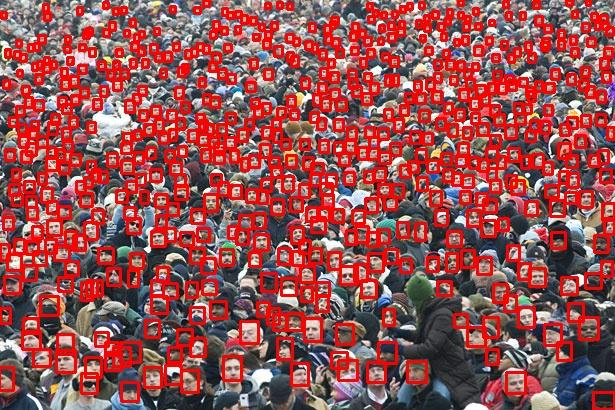
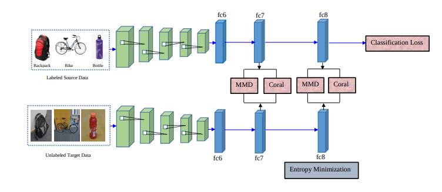

Mohammad Mahfujur Rahman
 |
Mohammad Mahfujur Rahman |
Biography
I am a researcher with the Speech, Audio, Image and Video Technologies (SAIVT) Group, School of Electrical Engineering and Computer Science, Queensland University of Technology (QUT), Brsbane, Australia.
I am working with Prof. Clinton Fookes and Prof. Sridha Sridharan as a Ph.D. researcher at the Speech, Audio, Image and Video Technologies (SAIVT) Laboratory, Brsbane, Australia. I am passionate about computer vision, deep learning, machine learning, robotics, and intelligent systems especially in visual recognition with limited or weakly labeled training data. I aim to utilize deep transfer learning and domain adaptation techniques to enable visual learning.
News
- One of my paper is accepted by Pattern Recognition (PR), 2019. Our work on Deep Domain Adaptation and Generalization, which provides a new analysis on unsupervised learning from the perspective of distribution mismatch among domains. [Code] [Paper].
- Code of Minimum Discrepancy Estimation (MDE) for Deep Domain Adaptatio can be found here [Code].
- Code of Multi-component Image Translation for Deep Domain Generalization can be found here [Code].
Preprints
| - |
Multi-component Image Translation for Deep Domain Generalization. |
Projects
|  |
Tiny Face Detector |
Selected Publications
|
Correlation-aware Adversarial Domain Adaptation and Generalization. |
|
|
Multi-component Image Translation for Deep Domain Generalization. |
|
|  |
On Minimum Discrepancy Estimation for Deep Domain Adaptation. |
Services
Conference Reviewer:
- ICRA 2020, WACV 2020.
Teaching
- 2015 : Computer Network, Daffodil International University, Lecturer.
- 2017 : Foundations of Electrical Engineering, Queensland University of Technology, Sessional Academic.
- 2019 : Research in Engineering Practice, Queensland University of Technology, Sessional Academic.
Awards
- August 2016 - February 2020 : QUT Higher Degree Research Tuition Fee Sponsorship
- August 2016 - February 2020 : QUT Postgraduate Research Award (QUTPRA)
- ICRITO 2015 Best Paper Award